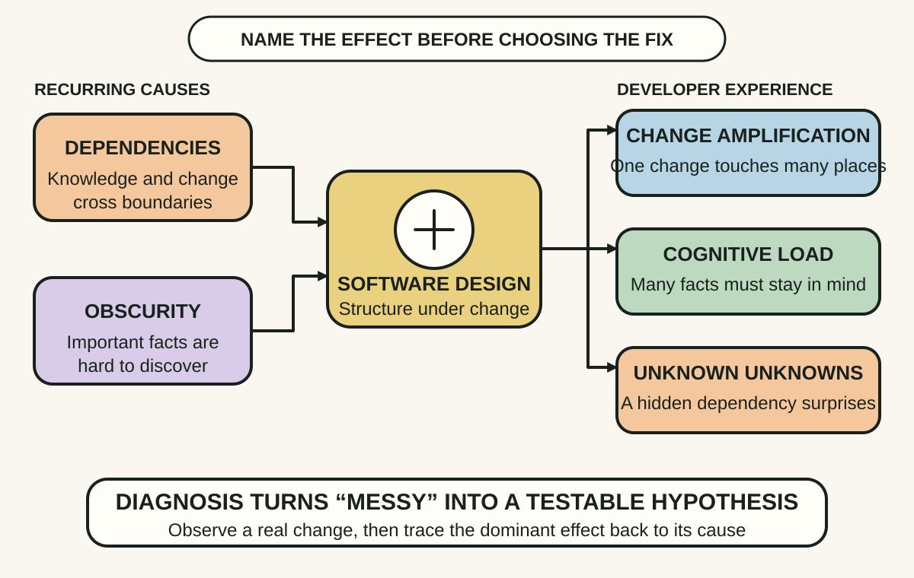
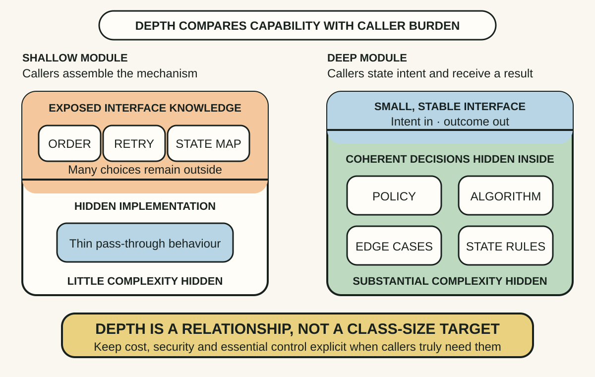
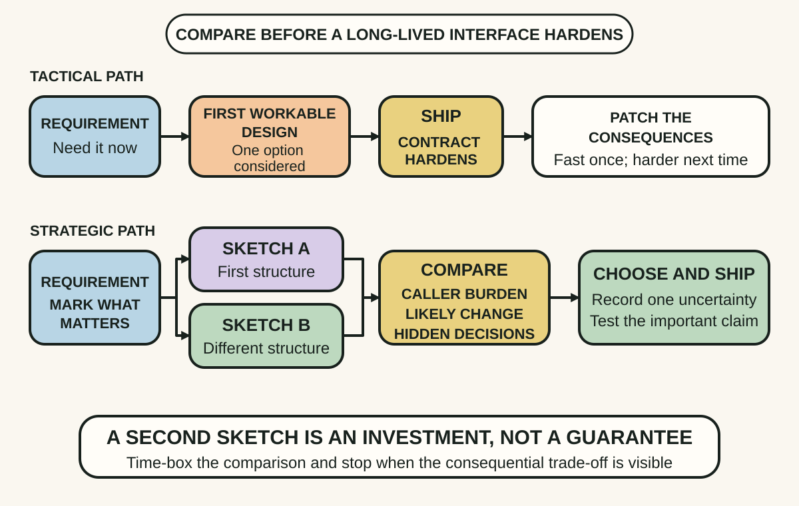

Daily lesson ·
A Philosophy of Software Design
Make software easier to change by diagnosing how complexity is felt, hiding design decisions behind deep modules and investing briefly in competing designs before an interface hardens.
Idea 1
Diagnose complexity by its effects #
The idea
Ousterhout defines complexity as anything about a software system's structure that makes it hard to understand or modify. He describes three ways developers experience it: change amplification, where a small change requires edits in many places; cognitive load, where too much knowledge must be held at once; and unknown unknowns, where it is unclear what must change or what may break.
Dependencies and obscurity are recurring causes. Complexity usually accumulates through many locally convenient decisions rather than one dramatic mistake, so a system can keep working while each later change becomes harder to reason about.

Why it matters
A precise symptom turns a subjective complaint about messy code into evidence that can guide a bounded improvement and later show whether the burden actually moved.
Apply it today
Choose one recent change that felt disproportionately difficult. Record how many places changed, which facts had to stay in mind and what surprised the team.
Classify the dominant effect as change amplification, cognitive load or an unknown unknown. Then identify the dependency or obscure decision most likely to be creating it.
Caveat or failure mode
Some complexity belongs to the problem domain, regulation or necessary distributed behaviour and cannot simply be designed away. Unfamiliarity can also mimic complexity. Use the symptoms as hypotheses supported by real changes, not as a score for blaming a module or its author.
Idea 2
Make modules deep enough to hide decisions #
The idea
Ousterhout describes a deep module as one that offers substantial useful behaviour through a comparatively simple interface. Its value comes from information hiding: callers do not need to understand the algorithms, policy choices, data structures or edge-case handling concealed inside.
A shallow module exposes almost as much complexity as it contains. Thin wrappers, pass-through methods and fragmented classes can add more interfaces without hiding meaningful decisions. Depth is a relationship between capability and interface burden, not a target number of methods or lines.

Why it matters
Every exposed option, ordering rule and failure detail becomes knowledge that callers may duplicate or depend on. Hiding a stable decision once can reduce both cognitive load and future change amplification.
Apply it today
Pick one helper, service or component used in several places. List the sequencing, retries, state transitions or configuration every caller must currently understand.
Choose one decision the module could own safely, then sketch the smaller intent-based interface callers would need if that decision moved inside.
Caveat or failure mode
A deep module is not permission to create a hidden god object. Important cost, security, transactional and failure behaviour may need to remain explicit. Thin adapters can also be valuable at generated, vendor or platform boundaries. Judge depth by reduced caller burden and coherent responsibility, not size alone.
Idea 3
Invest strategically, one design at a time #
The idea
Ousterhout contrasts tactical programming, which optimises for the fastest working change, with strategic programming, which makes a continuing investment in a design that will support later changes. Tactical choices can be rational during an emergency, but repeated without repair they accumulate complexity faster than visible features suggest.
His practical technique design it twice asks developers to sketch more than one plausible structure before committing. Comparing alternatives exposes assumptions and trade-offs while change is still cheap. The second edition's emphasis on deciding what matters keeps this from becoming exhaustive up-front design.

Why it matters
The first workable design often becomes a long-lived contract. A brief second option can reveal that a seemingly necessary parameter, dependency or abstraction belongs somewhere else.
Apply it today
Choose the next interface, data shape or workflow decision that will be costly to reverse. Sketch the first plausible design in three minutes.
Spend three minutes on a structurally different option. Compare what each makes callers know, what it hides and which likely change it makes easier before choosing.
Caveat or failure mode
Strategic programming is not gold-plating or predicting every future. Short-lived experiments, urgent recovery and highly reversible code justify lighter design effort. Time-box the comparison, focus on consequential commitments and record uncertainty instead of delaying delivery for an imagined perfect structure.
Knowledge check · 6 questions
Learning check
Answer all 6, then check your answers. Your first result stays in this browser, and each explanation appears after you check. A 3-question review can appear on the homepage from tomorrow.
6 questions not yet answered.
Today's experiment · 10 minutes
Run a two-design complexity check
- Choose one small interface or workflow decision that is about to become harder to reverse.
- Write one risk under each symptom: scattered edits, facts callers must remember and a possible hidden dependency.
- Sketch two structurally different designs, giving each no more than two minutes.
- Mark which decisions each design hides and which knowledge remains with callers.
- Choose the option with the clearest reduction in caller burden, then record one uncertainty and one check before implementation.
Observable result: You finish with two visible alternatives, one evidence-based choice and one uncertainty that still needs testing.
Retrieval practice
Spaced recall
- From Working Effectively with Legacy Code: where is the enabling point that could let one hidden dependency vary without changing its caller?
- From Site Reliability Engineering: which user-relevant signal would reveal that a simpler interface is hiding the wrong behaviour?
Verification
Source notes
These links support the attributed claims and edition details; applications and extensions are labelled in the lesson.
One-sentence takeaway